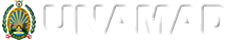

Uso del suelo
Watersheds
Area of interest
Test Land Use vector
Rec model results
Test Land Use raster
ES #1
vector
raster
Forest Edge Effect Model
Storage Model
Peru Carbono Map (Asner 200x)
Brazil Carbono Map (ref)
Bolivia Carbono Map (ref)
Full Carbono Map (ref)
sediment exported reaching stream [tons/pixel]
potential soil loss [tons/pixel]
sediment retention [tons/pixel]
sediment exported reaching stream [tons/watershed]
potential soil loss [tons/watershed]
sediment retention [tons/watershed
The Natural Capital Project develops practical tools and approaches to account for nature’s contributions to society, so that leaders of countries, companies, communities, and organizations worldwide can make smarter decisions for a more sustainable future
